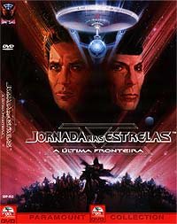
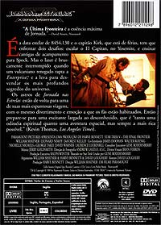

|
Por Luiz
Felipe do Vale Tavares
O
Filme
 "Jornada
nas Estrelas V" é sem dúvida o pior filme da série do
cinema. Mal escrito e mal dirigido por Shatner, na certa em uma
crise de inveja pelo sucesso de Leonard Nimoy na direção dos
dois filmes anteriores da série.
Nesse filme um bando de maltrapilhos liderados pelo meio-irmão de
Spock tomam o controle da Enterprise e de sua tripulação para
ultrapassar a grande barreira do Universo e encontrar Deus. É
certamente a pior história que Shatner poderia ter escrito.
Shatner queria fazer uma aventura com cenas de ação em caráter
épico (como em "Lawrence da Arábia") com elementos de
misticismo. Mas um péssimo roteiro somado a um orçamento pequeno
e péssima direção levou o filme em outra direção, cujo
resultado é pura mediocridade.
O filme só se salva nas cenas de interação entre Kirk, Spock e
McCoy, que são boas. O problema é que Shatner percebeu isso e
exagerou na dose. A cena em que os três personagens comem e
conversam na frente da fogueira é tão longa que chega a dar
sono.
Os poucos efeitos especiais são de péssima qualidade e fazem
qualquer fã da série cobrir o rosto de vergonha.
A trilha sonora é Jerry Goldsmith, por outro lado, é muito boa.
É o único elemento da produção que se salva.
Há boatos de que esse filme irá ganhar nos próximos anos uma
edição especial com novos efeitos, assim como o primeiro filme
da série em DVD, permitindo que o diretor, Shatner, conclua o
filme como planejou. O problema é que o final que Shatner
escreveu, começou a rodar e teve que desistir quando o orçamento
estourou é tão ruim quanto o final que acabou sendo filmado.
No roteiro de Shatner, quando a nave auxiliar com Kirk e cia.
descem ao planeta Sha-Ka-Ree, eles encontram seres feitos de
pedra. Isso mesmo, homens de pedra. A aparição que se fez passar
por Deus era na verdade um truque dessas criaturas para
conseguirem roubar a nave de Kirk e fugir do planeta.
Logo após a cena em que Sybok se sacrifica e Spock e McCoy são
transportados para a Enterprise, diversas formas de vida surgem
das rochas e perseguem Kirk. Enquanto ele escala uma cordilheira
para escapar vai atirando nos seres de rocha e consegue destruir
alguns. Quando fica encurralado eis que surge a nave de rapina
Klingon que liquida o restante dos agressores.
Na versão final do filme ainda há vestígios do final escrito
por Shatner. O altar em que aparece a entidade que se passa por
Deus surge com rochas que saem da terra.
Até a cena em que Sybok se sacrifica o filme continua fiel ao
roteiro; daí para frente foi o resultado de uma péssima gestão
do orçamento por parte de Shatner.
Os problemas começaram quando o orçamento permitia que apenas um
monstro-de-rocha fosse construído. Shatner se contentou e
começou a filmar a cena. Quando todos perceberam que essa idéia
não ia funcionar, também porque o monstro não era nada
convincente, Shatner desistiu desse final e, em vez do monstro,
colocou a imagem da entidade que se passa por Deus perseguindo
Kirk e sendo destruída pela ave de rapina Klingon. Há alguns
meses circulou na internet uma foto rara da produção mostrando
Kirk atirando no monstro de rocha.
Voltando aos boatos da edição especial em DVD, parece que a
Paramount está estudando a idéia de criar monstros de rocha
gerados por computador para finalizar o filme da maneira que
Shatner queria.
Mas tanto faz o final utilizado, pois ambos são uma porcaria. O
fato de tanto drama e uma suposta aventura para chegar à
fronteira final e encontrar uma entidade psicótica ou uma horda
de monstros de rocha parece a mesma coisa. Antes fosse se
encontrassem as ruínas de uma civilização avançada ou outra
coisa mais criativa.
Imagem
 Esse
DVD é um dos piores, senão o pior, que a Paramount já produziu.
De novo a Paramount resolveu não gastar dinheiro e usou para o
disco um master de LaserDisc, feito em 1991, de qualidade
precária mesmo para esse formato.
A imagem é péssima, com definição precária, muito granulada,
cores fracas e pouco definidas e por demais escura. Em uma TV de
até 20 polegadas até que dá para disfarçar esses defeitos. Em
uma TV maior todos esses defeitos ficarão bem aparentes.
O filme é apresentado em widescreen na proporção de 2,35:1.
Assim como nos DVDs dos sexto e sétimo filmes, a imagem também
não é anamórfica, prejudicando a qualidade de imagem e
impedindo que os possuidores de uma TV widescreen possam assistir
ao filme com a qualidade esperada de um DVD.
Para alegrar os ânimos é bom ressaltar que a partir do DVD do
quarto filme ("A Volta Para Casa") a Paramount
tomou vergonha e passou a remasterizar os filmes de Jornada
com excelente qualidade de áudio e vídeo. Portanto, não se
precisam se preocupar com a qualidade dos futuros DVDs dos quatro
primeiros filmes, pois são excelentes.
Som
"Jornada nas Estrelas V" foi o primeiro DVD da
série cujo áudio foi remixado para Dolby Digital 5.1 (cinco
canais independentes mais o canal do subwoofer). Os filmes da
série lançados anteriormente em DVD já foram produzidos
originalmente com esse formato.
A Paramount também não se deu ao trabalho de fazer uma remixagem
de qualidade. Apenas a ótima trilha sonora de Jerry Goldsmith se
beneficiou da remixagem; no demais o áudio se assemelha muito ao
formato original em Dolby Surround (apenas quatro canais). Em
raras ocasiões há efeitos de separação nas caixas de som
traseiras.
Extras
Apenas temos dois trailers como extras, nenhum muito interessante.
De qualquer forma, é melhor do que nada.
Conclusões
Um filme medíocre em um DVD medíocre. A única recomendação
para comprá-lo é evitar um vazio na prateleira entre os DVDs dos
filmes IV (a ser lançado até o final do ano) e VI.
Ficha
Técnica
Extras:
Menu interativo, Seleção de Cena, dois trailers de cinema
Vídeo:
Widescreen (2,35:1)
Áudio:
Inglês (Dolby Digital 5.1 Surround)
Legendas:
Inglês, Português e Espanhol
Ano de produção:
1989
Duração:
106 minutos
Data de Lançamento no Brasil (Região 4)
25/06/2002
|